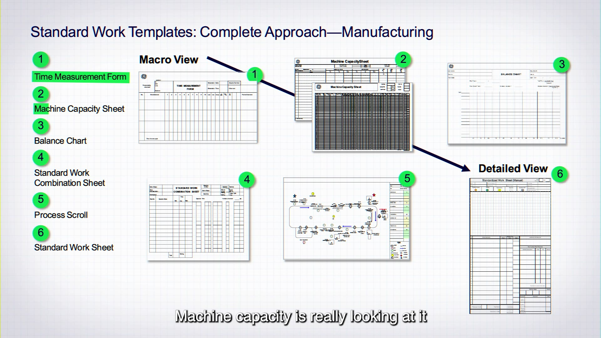
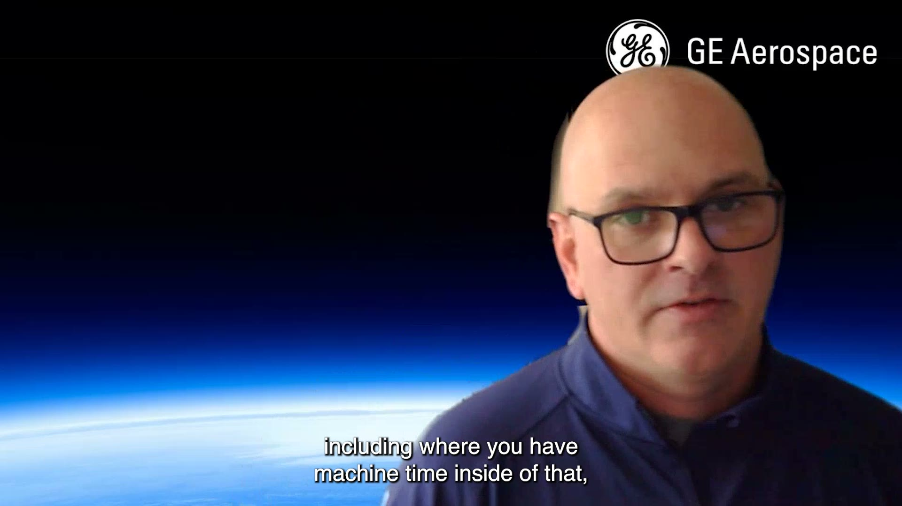
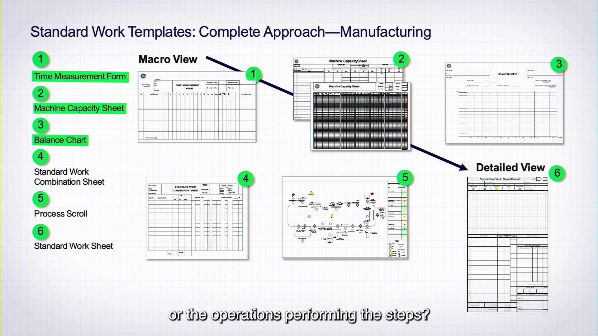

Standard Work, step by step
New to this? You are in the right place. Follow four moves to write your first standard. Nothing to know in advance.
Your Standard Work home. Start a new standard, grab a template, or open the full walkthrough whenever you need it.
What do you need today?
Start a new standard, grab a template, or open the full walkthrough. The four moves are below whenever you want them.
Is this you?
This page is built for the first 90 days. Pick the description that fits closest. All paths lead to the same four moves.
You have heard "standard work" in a brief but have never written one. This page starts from zero.
Most standard work examples show the factory floor. Your work is transactional or knowledge-based. This guide covers that too.
You may have a GE background but Flight Deck is unfamiliar. Standard work is the best entry point into the whole system.
You understand what consistent work looks like but have not formalized it before. The four moves below take about 20 minutes.
Your first standard in four steps
Each step has a short action, a worked example, the template it points to, a time estimate, and a small checklist. Check items off as you go. The progress bar at the top tracks your total.
Define the task
Before anything is written down, the task needs a name and the single best-known way to do it today — not the ideal, the real one. Pick one discrete piece of work with a clear start and end. This baseline is the starting point for your next improvement, so capture how the work actually runs now.
- Write the task name in one sentence (verb first, e.g. "Inspect," "Submit," "Verify")
- Name the single owner for this task right now
- Confirm this is the best-known way today, not the ideal version
- Note the Takt Time — the customer pace the task must keep
Document it
Pick the document that fits your work. Operations use Combination Tables and Process Scrolls; Non-Manufacturing uses Standard Operating Procedures (SOPs), Master Instructions (MI), or Detailed Job Instructions (DJI). Capture the Work Sequence and the Work Element Time for each step at the right level of detail — Process, then Key Steps, then Activities. Aim for a draft, not a final.
- Pick the document type for your work — Combination Table or Process Scroll, or SOP / MI / DJI
- List every work element in the real order they happen, including hand-offs
- Capture the Work Element Time and flag safety- or quality-critical points
Visualize it
Post the standard at the Genba — the real place where the work happens. For floor teams that is the workstation; for Non-Manufacturing teams it is the team page, shared drive, or a printed sheet in the meeting room. Visualizing it makes invisible work visible, so the team can see the standard and spot deviations against it. The test: can someone find it without asking?
- Post the standard at the Genba — where the work actually happens
- Confirm at least one colleague can locate it without asking you
- Link it from the team's Daily & Visual Management board
- Use it as the baseline to spot one source of waste (DOWNTIME)
Sustain it
A standard is the starting point for the next improvement, not a set-and-forget document. Follow the Release Process: assign clear ownership with a RACI, keep it in a repository the team can reach at the Genba, and sustain it on a 30-60-90 day rhythm so adherence — and any deviation — stays visible. Monthly review suits most Non-Manufacturing work; after every process change for manufacturing.
- Assign who is Responsible and Accountable (RACI) for keeping it current
- Set a 30-60-90 day review rhythm before closing this tab
- Check it against the four questions: is there a standard, is it up to date, does the team know it, is it being followed?
Your first standard in about 20 minutes
Each step builds on the last. This sequence works whether you are on the factory floor, in an engineering lab, or in a shared service center.
Most Popular Standard Work Forms
The forms teams pull most. Download what fits your work, or open the full template library for the rest. All forms open in Excel or SharePoint.
Full template librarySee it run on the floor
A 21-minute walkthrough of the six standard work templates, then the Greenville field example where the team puts them to work.
 ▶
▶
▶
▶

Time Measurement Form
List work elements with breakpoints, observe 10+ cycles, and use the lowest repeatable time plus an adjustment to find the true cycle time.

Machine Capacity Sheet
Split manual time from auto-run time for every machine, then compare time per item to actual excess capacity against demand.

Balance Chart
One bar per operator under a takt line. Under is capacity, the gap is waste, over is beyond takt and demand cannot be met.

Standard Work Combination Sheet
Steps in order with manual (solid), walk (wavy), and machine (dotted) time against a takt line. Does one cycle finish in takt?

Process Scroll
A layout of material and operator flow that reveals standard WIP, staffing plays, and hard versus soft bottlenecks.

Standard Worksheet
The single sheet that combines everything: layout, work elements, non-cyclical work, and safety, quality, and owner sign-off.
Review and improve an existing standard
Check a current standard against what good looks like, then revise where it falls short.
CF6 Final Assembly Cell, Lynn, MA
A four-station cell with 12 operators building to a 2.4-hour takt. Standard work is posted at each station and audited daily by the cell lead.
- Define the takt time from customer demand and available production hours.
- Sequence each task in the order operators must complete it; assign time values.
- Identify the right-sized standard work in process inventory at each station.
- Post the standard work sheet visually at the point of use, not in a binder.
- Train operators to the standard; document training completion.
- Audit adherence daily via leader standard work observation sheet.
- Update the standard within 24 hours of any confirmed method change; retire the old version.
Common questions
Yes. Standard work applies to any task that repeats at least once. Even knowledge work has sequences: how you structure a report, how you run a design review, how you hand off a drawing. You are not locking in a rigid script. You are capturing the best known approach so you have a baseline to improve from. The standard changes when you find a better way.
Detailed enough that someone new could follow it on day one without asking questions. That is the test. Most first drafts are too long. Aim for the steps that actually affect quality, safety, or timing. Everything else can live in a supporting note or link.
Manufacturing Standard Work captures physical steps at a workstation with cycle times and takt time. Transactional Standard Work captures sequences for office, service, or engineering tasks where the work is information-based, not physical. Leader Standard Work captures the daily and weekly routines a team leader follows to observe, develop, and sustain a system. If you are not on the shop floor, start with Transactional.
Update it whenever the process changes, whenever you find a better way, or whenever training someone reveals a gap. For stable processes, a monthly review is enough. A standard that has not been reviewed in six months is almost certainly out of date.